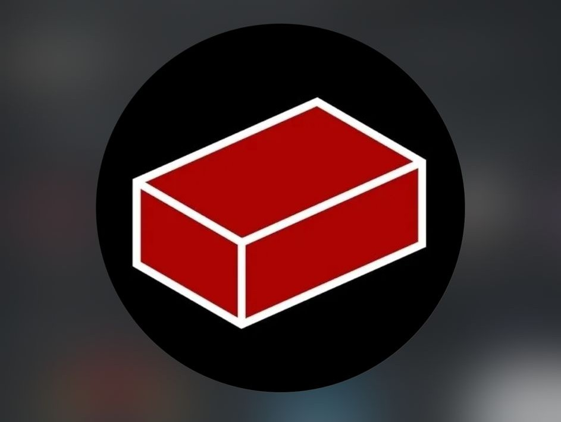
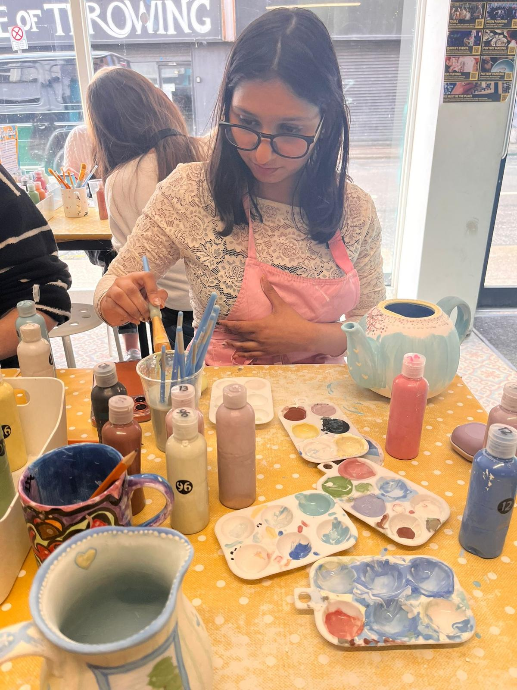

About Me
Personal Introduction
Hello, I am Esha Esha, a Business Studies student at Dublin City University with a strong passion for business growth, analytics, innovation, and strategy.
My university journey is helping me combine academic learning with practical experience to build a successful international career.
I believe success comes through discipline, continuous learning, confidence, and creativity.
Education
Dublin City University
- Degree: Business Studies
- Current Stage: Year 3
- Specialisation: Analytics
Academic Focus Areas
- Business Analytics
- Marketing
- Consumer Behaviour
- Strategic Management
- International Business
- Data Driven Decision Making
Professional Experience
Alongside university, I have gained part time work experience which has strengthened my practical business skills.
Workplace Skills Developed
- Customer service excellence
- Team collaboration
- Communication skills
- Handling pressure
- Time management
- Professional responsibility
- Problem solving
This experience has improved my confidence and readiness for the corporate environment.
Core Skills
Business & Technical Skills
- Business Analytics
- Excel
- Power BI
- Data Visualisation
- Dashboard Reporting
- Market Research
- Strategic Thinking
- Marketing Analysis
Professional Skills
- Communication
- Leadership
- Teamwork
- Problem Solving
- Adaptability
- Critical Thinking
- Presentation Skills
- Time Management
Student Life and Activities
At DCU, I actively participate in student communities that support both technical and personal growth.

Red Brick Society
Coding society where I explore technology, innovation, networking, and problem solving.
Skills Built
- Digital mindset
- Collaboration
- Technical curiosity

Fashion Society
Creativity, confidence, networking, branding, and student events.
Skills Built
- Creativity
- Confidence
- Presentation

Rock Climbing
Fitness, resilience, teamwork, discipline, and challenge mindset.
Skills Built
- Focus
- Determination
- Fitness
Beyond Academics
I enjoy activities that help me remain creative, healthy, and disciplined.
Interests
- Gym training
- Badminton
- Pottery
- Fashion trends
- Networking
- Personal development
- Travel and new experiences
These hobbies help me maintain a balanced and growth oriented lifestyle.

Strength Profile
| Area | Strength | Value |
|---|---|---|
| Business | Strategic Thinking | Better decisions |
| Data | Analytics & Reporting | Clear insights |
| People | Communication | Strong teamwork |
| Digital | Modern Tools | Efficiency |
| Growth | Adaptability | Continuous progress |
Career Goal
My goal is to build a successful international career in:
- Business Analytics
- Consulting
- Strategic Management
- Growth Focused Corporate Roles
I aim to create measurable value for organisations through data driven decisions and innovation.
Connect With Me
Professional Profiles
LinkedIn: View Profile
GitHub: View Portfolio Code
I am always open to networking, collaborations, and career opportunities.